Inteligencia artificial al servicio de la estrategia electoral.
Mesa «Pulso electoral campañas 360 (IA)»Jueves 26 de noviembre de 202617:00 · Salón Caza B
Clic o → para comenzar · F pantalla completa · H ayuda
Ruta de la sesión
Tres actos, una sola plataforma.
01
Contexto
EE. UU. 2026 y el reto de México 2027.
02
PULSO 360°
La plataforma, panel por panel.
03
Confianza y futuro
Verificación, cierre y demo en vivo.
Ponentes · 1/2
Consultor en Inteligencia Artificial
Mtro. Eduardo Contró
Desarrollador de PULSO 360°
Especialista en marketing político
Mtra. G. Citlali Pérez Cobos
Máster en Ciencias Políticas y Gestión Pública
20 años en marketing estratégico
Jurado de The Victory Awards por 7 años
Ponentes · 2/2
Especialista en materia electoral
Dr. José Enrique Vallarta Rodríguez
Doctor en Derecho por la UNAM
Doctorado en Administración, Universidad La Salle
Director General Adjunto en SEGOB
Especialista en comunicación política
Lic. Juan Vázquez Colmenares Muñoz
Más de 3 décadas en comunicación política
Productor de 3 presidentes de México
Director del Sistema Michoacano de Radio y Televisión
Inteligencia artificial
La IA ya está en la campaña.
Analiza comportamientos, identifica patrones y anticipa tendencias a una escala sin precedentes.
Contexto · Estados Unidos
IA en las elecciones intermedias de EE. UU. 2026.
0anuncios generados o modificados con IA
+US$0 Men gasto para difundirlos
Voces e imágenes recreadasSátira visualEscenas modificadas
WMP / AdImpact, 29 oct. 2026 (corte previo a la jornada) · Reuters, 28 mar. 2026 · Dr. José Enrique Vallarta Rodríguez
Regulación y conclusiones
0estados
con leyes sobre IA y contenido sintético en campañas.
El gasto en anuncios con IA, por sí solo, no mide su influencia en el voto.
Propuesta para México: etiquetado, responsabilidad y atención de quejas.
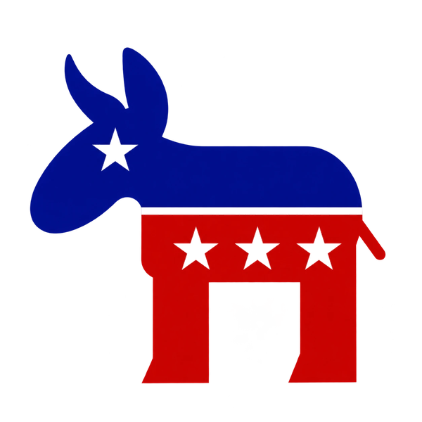
DemócratasSenado · resultados 2026Republicanos
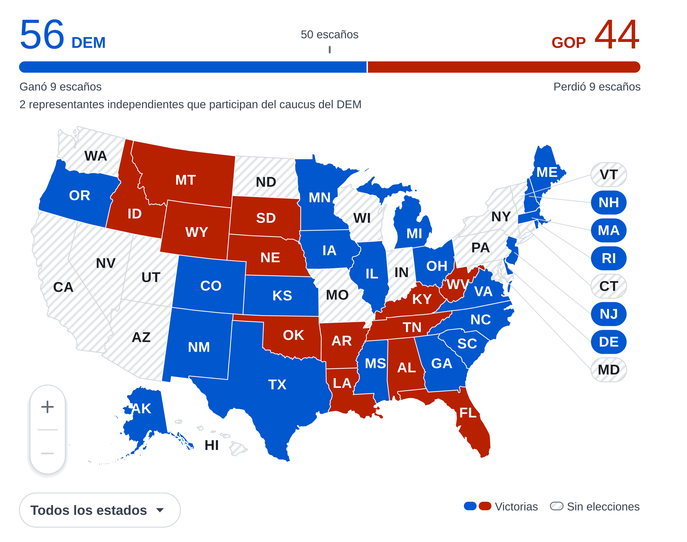
NCSL, 21 oct. 2026 · PolitiFact, 9 nov. 2026 · Propuesta del Dr. José Enrique Vallarta Rodríguez para México
México conectado
0 millones
de personas usaron internet en 2025.
0%
de la población de 6 años y más.
0%
se conectó con un teléfono inteligente.
Información que una campaña necesita comprender.
INEGI, ENDUTIH 2025 · publicada el 16 de junio de 2026 · Dato nacional: no equivale al padrón electoral ni al alcance de una plataforma
En lo electoral
En México, ya está ocurriendo.
INE · InésAtención
0
conversaciones ciudadanas atendidas en 2023-2024.
LecciónCada consulta merece respuesta y seguimiento.
Signa_Lab ITESODebate 2024
0
preguntas ciudadanas procesadas con IA y revisión humana.
LecciónMiles de preguntas, ordenadas para decidir.
INE · DEPPPPropaganda
0
materiales de propaganda con uso de IA registrados en 2024.
LecciónProducir, revisar y conservar cada versión.
INE, Estrategia de Difusión 2023-2024 · Signa_Lab ITESO, abril 2024 · INE DEPPP, septiembre 2024
Adopción en México
La IA ya es parte del trabajo diario.
Consultoría
Análisis y recomendaciones en minutos.
Gestión de equipos
Tareas, seguimiento y coordinación.
Recursos y tiempo
Menos horas operativas, más estrategia.
Todo eso, ya lo hace PULSO 360°.
El reto
La elección intermedia de México.
Domingo 6 de junio de 2027
Faltan
000días
:
00horas
:
00min
:
00seg
Elección 2027
+0
cargos en disputa.
Cada candidatura necesita estrategia, contenido y territorio.
PULSO 360° cubre ese hueco.Un solo panel para coordinar el trabajo y optimizar los recursos de cada partido.
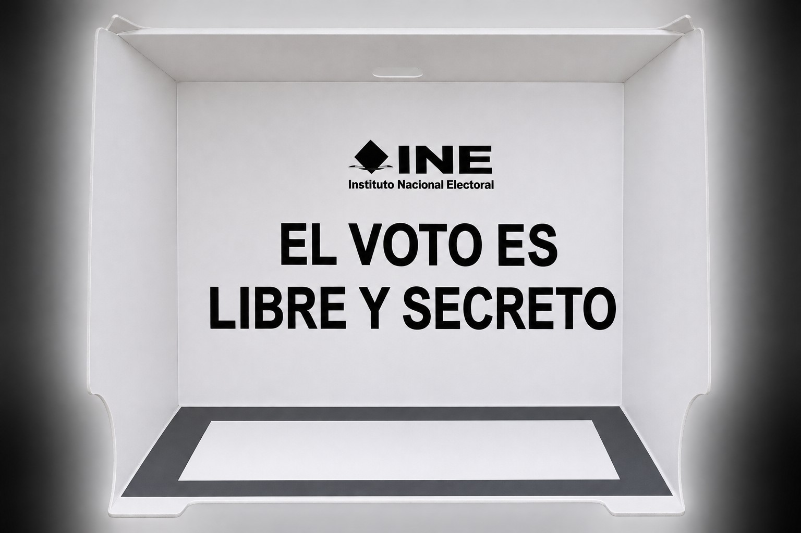
Marco legal · 1/3
IA y propaganda electoral en México.
TextosVocesImágenesVideos
Su uso plantea tres preguntas:
¿Qué dice el mensaje?¿Con qué datos?¿Quién responde por su difusión?
LGIPE · art. 242, numeral 3Propaganda electoral: materiales y expresiones que partidos, candidaturas registradas y simpatizantes producen y difunden durante la campaña.
Dr. José Enrique Vallarta Rodríguez · PULSO 360° opera dentro de este marco
Marco legal · 2/3
Recomendaciones para el uso de IA.
Fecha y medio
Recursos y gasto
Contenido del mensaje
Datos personales
Niñas, niños y adolescentes
Calendario electoral · veda · reglas del canal
Verifica cuándo y por dónde se difunde.
Calendario, veda y reglas del canal, revisados.
Recursos públicos · fiscalización
Respeta los límites y comprueba el gasto.
Producción y difusión, registradas y comprobadas.
Calumnia · valoración según el contexto
Atribuir falsamente hechos o delitos puede ser calumnia.
Hechos verificados antes de publicar.
Datos sensibles · finalidad · consentimiento
Opiniones políticas vinculadas a personas son datos sensibles.
Origen, finalidad y fundamento legal, revisados.
Lineamientos del INE · resoluciones del TEPJF
Representar menores con IA exige revisar sus reglas.
Autorizaciones y origen del material, documentados.
Dr. José Enrique Vallarta Rodríguez
Marco legal · 3/3
Fortalecer la regulación de la IA electoral.
01
Identificar
El contenido generado o alterado con IA.
02
Limitar
La simulación engañosa de voces e imágenes.
03
Responder
Responsabilidades y mecanismos de queja.
Protegiendo los derechos de la ciudadanía y la libertad de expresión política.
Dr. José Enrique Vallarta Rodríguez
La plataforma
Hoy, todo en un solo panel.
PULSO 360° · Panel Integral de campañaEN VIVO
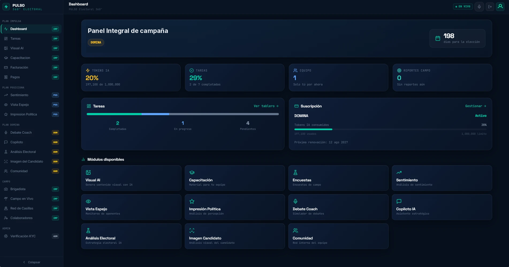
La plataforma
PULSO360° ELECTORAL
Una plataforma. Toda la campaña.
EscuchaProduceMoviliza
Cuatro planes
Así se organiza PULSO 360°.
IMPULSA
Organiza
Dashboard
Tareas
Visual AI
Capacitación
Facturación
Pagos
POSICIONA
Escucha
Radar Social
Sentimiento
Vista Espejo
Impresión Política
DOMINA
Decide
Debate Coach
Copiloto
Análisis Electoral
Imagen del Candidato
Comunidad
CAMPO
Moviliza
Brigadista
Campo en Vivo
Red de Casillas
Colaboradores
Paneles que veremos en esta sesión
Lo que cambia con la IA
Cinco dimensiones del marketing político.
A
Inteligencia de mercado electoral
Necesidades y percepciones ciudadanas.
Sentimiento · Encuestas
B
Segmentación y personalización
Cada audiencia, su formato.
Copiloto IA
C
Producción de contenido
Más piezas, menos tiempo.
Visual AI
D
Reputación e inteligencia digital
Alertas antes de la crisis.
Vista Espejo
E
Optimización de recursos
Medir para decidir mejor.
Dashboard
Marketing político en la era de la IA · Marketing 5.0: tecnología al servicio de la estrategia
Su procesador de IA
Tareas que PULSO 360° optimiza.
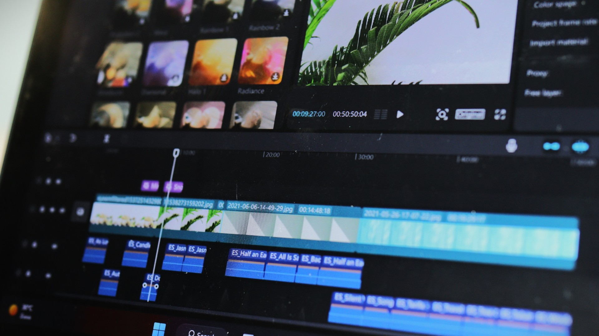
Diseño y edición
Asesor de imagen
Consultor político
No sustituye a las personas expertas en cada materia: funciona como su apoyo.
IMPULSATareas
Todo el equipo, en un tablero.
PrioridadCategoríaFecha límite
PULSO 360° · Tablero de TareasEN VIVO
Video · Tareas
PULSO 360° · Contenidos visualesEN VIVO
E-cardGIF animadoCaricaturaLogotipo
Diseño con IA, en minutos.
“La creatividad debe estar en manos del equipo.”
Ingeniería de prompts
PROMPTS
Con buenas instrucciones, la IA diseña elementos gráficos de calidad.
Al contratar PULSO 360°, recibes prompts listos para usar,adaptados a tu contexto y a tu campaña.
Ingeniería de prompts
Anatomía de un buen prompt.
Prompt · ejemplo resumido
Diseña una e-card de bienvenida horizontal, formato 16:9, calidad 8K,para recibir a quienes ven una presentación en vivo; debe transmitir cercanía, entusiasmo e innovación.Fondo azul noche profundo, degradados suaves y formas fluidas en turquesa.Coloca únicamente estos textos: “¡Qué gusto tenerles aquí!” y “Gracias por acompañarnos.”Sin logos, marcas de agua ni texto adicional.
FormatoObjetivo y tonoEstilo visualTexto exactoRestricciones
Resultado · Visual AI
Hecho con Visual AI
Cuatro prompts, cuatro resultados.
16:9 · 8K
E-card de bienvenida
“Fondo azul noche y formas fluidas en turquesa.”
4 fotogramas · bucle
GIF animado
“Ondas suaves y una luz que sube y baja.”
Estilo editorial
Caricatura
“Un robot asistente imita el saludo del presentador.”
Vectorial · un color
Logotipo PULSO 360°
“Un pulso estilizado dentro de una órbita.”
Resultados generados en el panel Visual AI de PULSO 360° · cada pieza se revisa antes de publicarse
Video con IA, desde un texto.
Texto a videoImagen a videoDe 6 s a 5 min
PULSO 360° · Contenidos visuales · Video IAEN VIVO
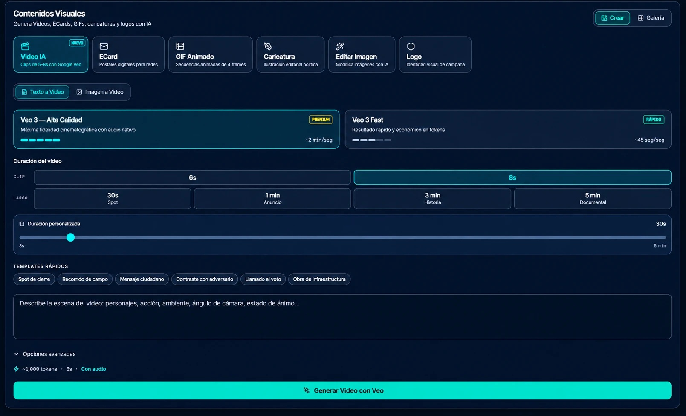
Captura · Video IA
Productividad
Más capacidad para el equipo.
−0%de tiempo en tareas de escritura
+0%de calidad en el resultado
Experimento con 453 profesionales · Noy y Zhang, Science (2023)
Tiempo recuperadoEscenario ilustrativo
0 h/mes
Un equipo de 5 personas que recupera 30 minutos diarios durante 22 días.
POSICIONARadar Social · Sentimiento
La reputación cambia en horas.
SentimientoTendenciasTemas
PULSO 360° · Radar de sentimientoEN VIVO
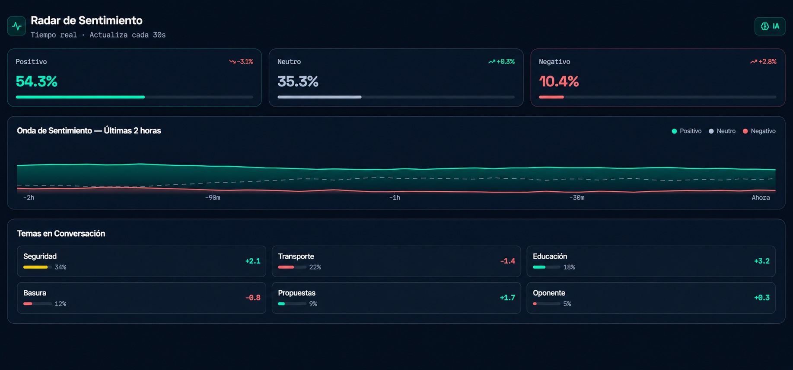
Captura · Radar de sentimiento
PULSO 360° · Impresión Política · Donald TrumpEN VIVO
Video · Impresión Política
PULSO 360° · Impresión Política · Emmanuel MacronEN VIVO
Video · Impresión Política
Ejercicio de análisis
DT
Análisis principalDonald TrumpPresidente de Estados Unidos (2025–2029)
EM
Análisis secundarioEmmanuel MacronPresidente de la República Francesa (2022–2027)
Caso México · AnálisisLuis Donaldo Colosio RiojasSenador de la República por Nuevo LeónAspirante a la gubernatura de Sonora en 2027
Movimiento Ciudadano
PULSO 360° · Impresión Política · PerfilEN VIVO
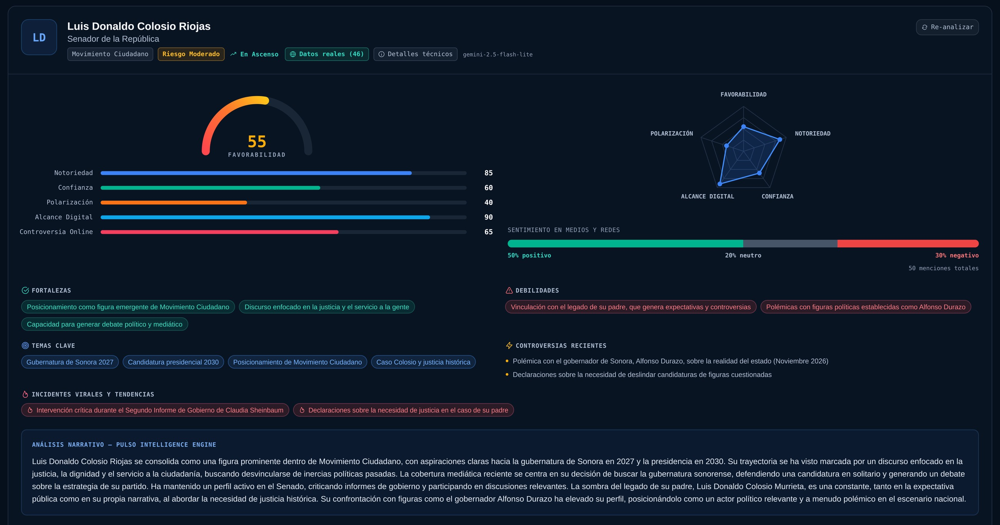
PULSO 360° · Impresión Política · Lectura digitalEN VIVO
Presencia en redes
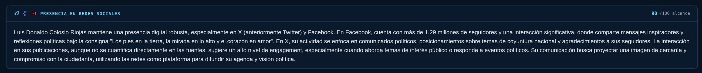
Sentimiento ciudadano
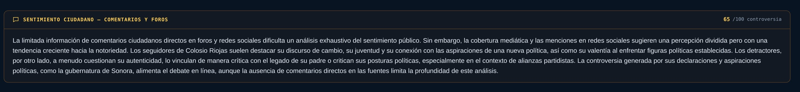
Comunidades online
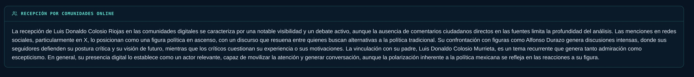
Ensaya. Mide. Mejora.
1Elige el modo2Carga transcripción o video3Simulacro en vivo con IA
PULSO 360° · Debate CoachEN VIVO
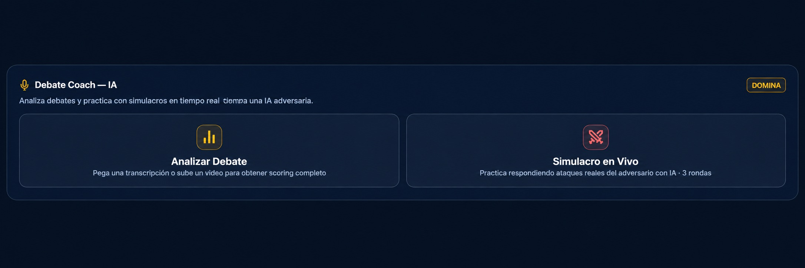
Captura · Modos
PULSO 360° · Debate Coach · AnalizarEN VIVO
Captura · Carga
PULSO 360° · Debate Coach · Simulacro en vivoEN VIVO
Video · Simulacro
PULSO 360° · Imagen del CandidatoEN VIVO
Video · Imagen del Candidato
Ejercicio de análisis
GN
Análisis de imagenGavin NewsomGobernador de California, Estados Unidos (2023–2027)
La IA sugiere. El equipo decide.
TerritorioRadar socialMetas
PULSO 360° · CopilotoEN VIVO
Video · Copiloto
Monitoreo por GPS, en tiempo real.
Al activar el monitoreo, cada brigadista aparece en el mapa.
Cobertura nacional
PULSO 360° · Campo en VivoEN VIVO
Brigadistas activos
Visitas completadas
Reportes e incidencias
Tiempo en campo
Un reporte, en tres pasos.
PULSO 360° · Brigadista · Nuevo reporteEN VIVO
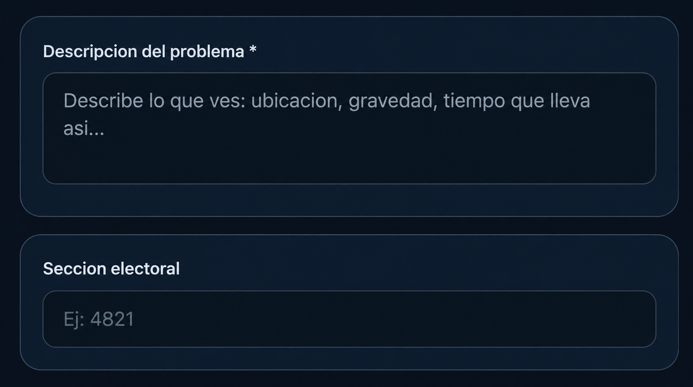
Captura · Reporte
PULSO 360° · Brigadista · Tipo de problemaEN VIVO
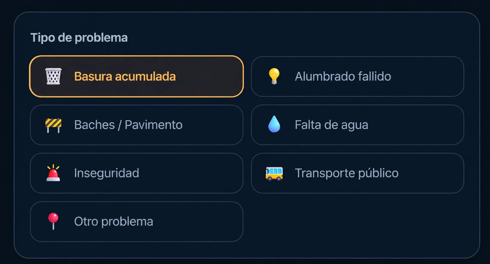
Captura · Tipo de problema
01Describe el problema
02Elige el tipo
03Foto (opcional)
Procesamiento centralizadoTodos los reportes, en un solo panel.
Cada casilla, cubierta.
Mapa por secciones electorales del INE.
CoberturaAsignación por casillaCapacitación y registro
PULSO 360° · Red de CasillasEN VIVO
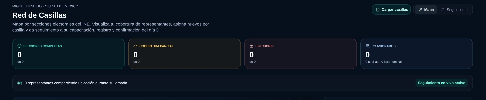
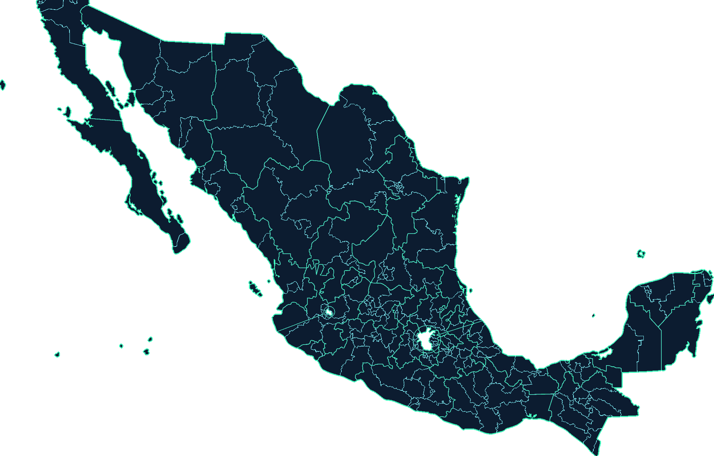
Cada colaborador, con su acceso.
MódulosComunidadInvitación
PULSO 360° · ColaboradoresEN VIVO
Video · Colaboradores
Desinformación
Datos objetivos contra la desinformación.
MediosTV, radio y prensa
Redes socialesTodas las plataformas
Datos públicosFuentes oficiales
Panel PULSO 360°
Analiza la presencia en medios y redes de forma objetiva.
Sin sesgosTodas las fuentesTodos los enfoques
Verificable
Difundir
Rumor
Verificar
Coordinado
Documentar
Flujo de aprobación
Antes de publicar, tres verificaciones.
Integradas en el flujo de PULSO 360°: cada pieza sale con respaldo.
01 · HECHOS
¿Qué afirma?
Hechos verificados; voces e imágenes revisadas.
02 · DATOS
¿Con qué datos?
Origen anotado y uso permitido.
03 · AUTORIZACIÓN
¿Quién la autorizó?
Versión final, autorizaciones y gasto, conservados.
El marketing político del futuro
De vender candidatos a construir confianza.
01
Inteligencia estratégica
Decidir con información verificable.
02
Autenticidad y reputación
La congruencia vale más que nunca.
03
Comunicación ciudadana
Del monólogo al diálogo.
04
Ética y responsabilidad
Protocolos para usar la IA con respaldo.
Para reflexionar
¿Quién tiene hoy más posibilidades de ganar una campaña?
El que tiene más espectaculares
El que tiene más seguidores
El que tiene la mejor información
Ninguno, necesariamente.
Gana quien entiende mejor a la sociedad, administra mejor sus recursos y decide con información, a mayor velocidad.
Conclusión
La tecnología puede construir el mensaje.
La confianza ciudadana sigue siendo el verdadero capital de la democracia.
VOTO
¿Quieres conocer más de PULSO 360°?
Agenda tu demo en vivo.
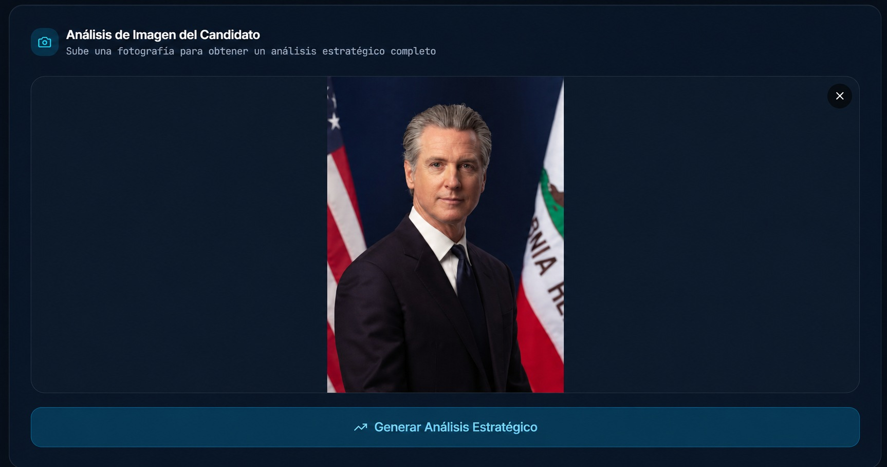
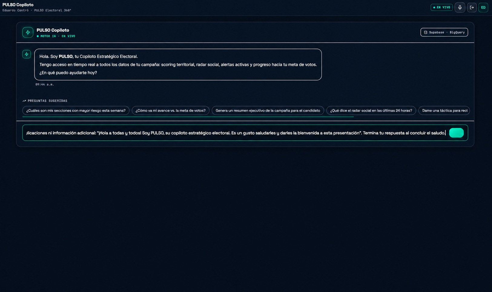
Demo en vivo
Mira PULSO 360° funcionando.
Agenda una demostración en vivo para tu equipo de campaña.
EN VIVO
Código QR por integrar
Agenda tu demoAgenda por WhatsApp
Código QR por integrar
Agenda tu demoAgenda por WhatsApp
PULSO360° ELECTORAL
Gracias.
Sesión de preguntas
Mtro. Eduardo Contró
Mtra. G. Citlali Pérez Cobos
Dr. José Enrique Vallarta Rodríguez
Lic. Juan Vázquez Colmenares Muñoz
Cifras y casos
Wesleyan Media Project / AdImpact, 29 de octubre de 2026 · Reuters, 28 de marzo de 2026.
NCSL, 21 de octubre de 2026 · PolitiFact, 9 de noviembre de 2026.
INEGI. ENDUTIH 2025, 16 de junio de 2026.
Noy, S. y Zhang, W. (2023). Science, 381, 187-192.
INE, Estrategia de Difusión 2023-2024 (Inés) · INE DEPPP, 2024 · Signa_Lab ITESO, 2024.
Marco normativo y bibliografía
Constitución, arts. 41 y 134 · LGIPE, arts. 242, 247, 251 y 471.2 · Reglamento de Fiscalización del INE.
Ley General de Protección de Datos Personales en Posesión de Sujetos Obligados.
INE/CG527/2026 · TEPJF, SUP-RAP-214/2026 · Corte de revisión: 12 de noviembre de 2026.


 Resultado · Visual AI
Resultado · Visual AI

 DT
DT EM
EM Captura · Carga
Captura · Carga GN
GN